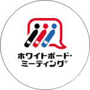

大阪府八尾市
ウェブ制作・ウェブ開発 フリーランス
WEBSON ・ そんほんす （孫弘樹）

コードを書くことが大好きです。
アバウト〜私について
○月 ○日
日直
そんほんす
２０２０年３月から本気出して勉強をはじめました。
所属コミュニティから案件をいただいて、
２件（２０２２年３月現在）
納品できたところです。
さらに技術を磨いていきたいと考えています。
制作実績・これまでの活動
スキル
-
HTML/CSS/JavaScript
ウェブ周りの基本、HTML、CSS、JavaScriptは常にアップデートしてまいります。セマンティックなHTML、SEOを意識した構造、BEM,FLOCSS,PRECSSなどのCSS設計思想、JavaScript、JQueryも対応できます。
-
Wordpress
WordPress既存テーマでのサイト構築。静的サイトのWordPress化も可能です。PHPのロジックを使ってできるだけ効率的にコードを書きます。
-
タスクランナー Node.js
タスクランナーにnode Scriptを使っています。scssのコンパイル、prefixの付与など。静的サイトのコーディングをできるだけ効率化します。
-
Gatsby.js
静的サイトジェネレータGatsbyのテーマを使って、サイトを構築できます。また、ブログのHTML，CSSデータをGtasbyで構築しました。
-
AdobeXD
デザインは主にAdobeXDを使用しています。コンポーネント、レイヤーを意識して、見やすく、コーディングもしやすいデザインを作成します。
-
 ホワイトボード・ミーティング®
ホワイトボードミーティング®というファシリテーションスキルの認定講師資格を持っています。ヒヤリングや会議の運営で力を発揮します。
サービス
-
ウェブサイト制作
サービスの解説サービスの解説サービスの解説サービスの解説サービスの解説サービスの解説サービスの解説サービスの解説サービスの解説サービスの解説サービスの解説サービスの解説サービスの解説サービスの解説サービスの解説サービスの解説サービスの解説サービスの解説
-
ウェブサイト制作
サービスの解説サービスの解説サービスの解説サービスの解説サービスの解説サービスの解説サービスの解説サービスの解説サービスの解説サービスの解説サービスの解説サービスの解説サービスの解説サービスの解説サービスの解説サービスの解説サービスの解説サービスの解説
-
ウェブサイト制作
サービスの解説サービスの解説サービスの解説サービスの解説サービスの解説サービスの解説サービスの解説サービスの解説サービスの解説サービスの解説サービスの解説サービスの解説サービスの解説サービスの解説サービスの解説サービスの解説サービスの解説サービスの解説
経歴
私のこれまでの経歴です。 仕事のこととPCに関わることを中心に記載しています。
1972年7月18日
兵庫県川西市で生まれる。 まるまると太っていましたが、一度鼻血が止まらず、病院へ。とても華奢な子どもになる。
小学生〜中学生時代
大流行のファミコンを親にねだるも、「ゲームだけだからだめ。パソコンならOK」とMSXを買ってもらう。 MSXのゲームには飽きて、本を買ってきてはBasicの写経に勤しむ。
大学時代〜2000年
大阪の「トッカビ子ども会」でボランティア。卒業後、アルバイトスタッフになる。在日コリアンの子どもの放課後児童クラブのようなもの。
大阪府八尾市の小学校で常勤講師。学校での仕事に加え、コリアンのことを中心に文化の指導のためいくつかの学校に指導に出向くことも。
2001年〜2012年
大阪府教員採用テストに合格。公立小学校に赴任する。 2つの小学校を経験。 校内の分担では常に情報教育、情報機器の担当。人権教育主任、体育主任、研究主任などのマネジメント職も経験。 学校のホームページを作成、多くの人が更新しやすいように工夫して作成するも、市内のシステム入れ替えによって公開は数ヶ月で終わる。 並行して、教職員組合の役員も経験、会計、機関紙編集なども担当。
2013年〜2015年
教職員組合の書記長（事務局長）となり、専従職員として組合の業務にあたる。組合のマネジメントにおいて、チャットツール、クラウドを導入。ブログ・FBページなどを活用して情報発信。 このときに、ホワイトボード・ミーティング®の認定講師資格や衛生推進員資格を取得。
2016年〜2020年
教育現場に復帰。日本語指導担当になる。組合の書記長はそのまま継続。 コロナ禍の学校において、チャットツールを導入。名簿管理やテストの集計において、VBAを調べつつ活用。テスト集計の工数を大幅に減らし感謝される。生活指導担当も経験。 この頃に、プログラミング学習にとりくみはじめるも、一旦挫折。
2019年〜
コロナ禍の中、プログラミング学習再開。Progateウェブ開発パス（Rails）を完走。Railsチュートリアル完走。Isaraの模写中にOver40WebClubに加入。学習が加速。 勉強会ドリブン勉強法を実践、connpassで4回の学習会の講師。
2021年〜
転勤して、新しい学校で日本語指導。 Over40WebClubの先輩フリーランスからコーディング〜WordPress化案件をいただいて、納品。エクプラというコミュニティでウェブ制作会社のLPコーディング案件をいただいて納品。 現在は、自分が所属する団体のHP構築、SNS運用中。